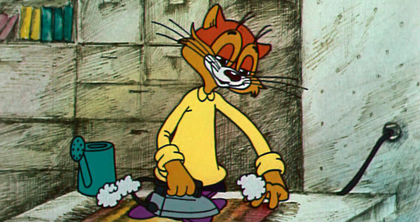

ТИПОЛОГИЯ ПЕРСОНАЖЕЙ В СОВЕТСКИХ МУЛЬТФИЛЬМАХ
Советские мультфильмы не только развлекали. Они формировали представление о себе и о мире у детей, будущих советских граждан. На основании мультфильмов в нашем сознании сформировались устойчивые образы положительных и отрицательных героев. Давайте попробуем выделить и описать основные типы этих героев. И начнём с мужских персонажей.
Интеллигенты
К этому типу мы отнесем всех рефлексирующих героев с гибким умом и хорошим воспитанием. Часто они имеют творческую профессию. И практически всегда в их образе присутствует лёгкий оттенок грусти, намекающий на то, как непросто им жилось в советском обществе.
Крокодил Гена, лев Бонифаций, кот Леопольд - кто из них бывал безудержно весел? Но мы любим их и такими, спокойными, уравновешенными и тоскующими.

Хорошие парни
Этот тип героев легко узнаваем. Вовка из мультфильма про попугая Кешу, Чебурашка, Пятачок, Заяц из "Ну, погоди!". Всех их отличает доброта, щедрость, умение прощать. Они транслируют образ идеального друга, члена семьи и общества. Но они практически не меняются, проходя свою долю испытаний, поэтому за ними довольно скучно наблюдать. Таков закон жизни: хулиганы и злодеи всегда вызывают больше интереса.
Простаки
Этот тип персонажа перекочевал в мультфильмы прямиком из русских народных сказок. Такой герой особенно не выделяется ни умом, ни предприимчивостью. Но в один прекрасный день, по щучьему веленью, конька - горбунка хотенью, или в результате другого чуда, получает принцессу в жены и полцарства в придачу.
На мой взгляд, такой народный герой напрочь отбил у большинства русских Иванов инициативность. Сидят они теперь бедные, несчастные и ждут, когда на них счастье и богатство с неба свалится. А они всё никак не падают, зацепились, наверное, за облака.
Хулиганы
Эти герои - антагонисты положительных персонажей, с которыми всегда составляют неделимую пару: попугая Кеша, Волк из "Ну, погоди!", мышки, строящие козни Леопольду. Обратите внимание, что герои эти совсем не злые. Их неукротимое желание сделать какую-то пакость происходит скорее всего от избытка энергии. А то, что они всегда сами попадают в неприятности, вызывает у зрителей сначала сочувствие, а затем и любовь к этим героям.
Злодеи
Без этого типа героев в сказках и поучительных историях тоже не обойтись. Такие герои, в отличие от хулиганов, жалости и сочувствия не вызывают. Но и одержать победу в советских мультфильмах им никогда не удаётся.
Разные Змеи Горынычи и Кощеи Бессмертные - вот кто составляет эту группу.